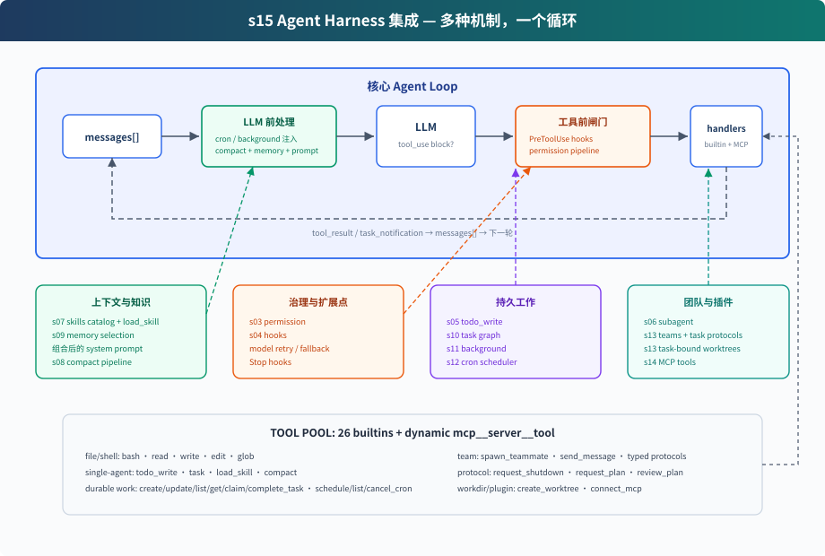

s15: Agent Harness 集成 — 多种机制，一个循环
s01 → ... → s13 → s14 → s15 → s16 → s17
"多种机制，一个循环" — 工具、权限、记忆、任务、团队、插件都挂在同一个 while True 上。
Harness 层: 集成 — 把本章示例实际使用的机制放进同一个可运行系统。
问题
前面的章节把不同机制放在各自独立的示例中。本章把集成运行时需要的机制接到一起。
一个能长期工作的 coding agent 需要同时拥有：
- 工具分发和权限边界
- hooks 扩展点
- todo 计划和任务图
- 技能、记忆、系统 prompt 组装
- 压缩和错误恢复
- 后台任务和 cron 调度
- 团队、协议和 idle 任务认领
- 任务绑定的 worktree
- MCP 外部工具接入
S15 不再引入一个独立机制，而是展示现有机制从哪里进入模型循环，以及它们产生的事件如何回到同一段对话。
解决方案

S15 不再引入新机制，而是把前面各章的组件集成到同一个 harness：
用户输入
→ UserPromptSubmit hooks
→ cron/background 通知注入
→ context compact
→ memory + skills + MCP 状态组装 system prompt
→ LLM
→ has tool_use block?
否 → Stop hooks → 返回
是 → PreToolUse hooks + permission
→ TOOL_HANDLERS / MCP handlers / background dispatch
→ PostToolUse hooks
→ tool_result / task_notification 回 messages
→ 下一轮
循环仍是同一个结构：调用模型，检查响应里是否出现 tool_use block，执行工具，再把结果追加回 messages。是否继续工具轮，由响应中有没有实际的 tool_use block 决定。
组件在循环中的位置
| 位置 | 组件 | 作用 |
|---|---|---|
| 用户输入前后 | UserPromptSubmit hooks |
记录、注入、审计用户输入 |
| LLM 前 | cron queue | 把定时触发的 prompt 注入 messages |
| LLM 前 | background notifications | 后台任务完成后以 <task_notification> 注入 |
| LLM 前 | compaction pipeline | 先压大输出，再裁历史，再压旧 tool_result，必要时摘要 |
| LLM 前 | memory / skills / MCP state | 组装 system prompt，让模型看到当前能力和长期上下文 |
| LLM 调用 | error recovery | 429/529 重试，max_tokens 升级，prompt too long 触发 reactive compact |
| 工具执行前 | PreToolUse hooks + permission |
拦截危险命令、写越界、破坏性 MCP 工具 |
| 工具分发 | assemble_tool_pool |
组装内置工具和 MCP 动态工具 |
| 工具执行时 | background dispatch | 显式标记的 bash 操作放入 daemon thread，主循环先返回占位结果 |
| 工具执行后 | PostToolUse hooks |
大输出告警、日志等后处理 |
| 返回循环 | tool_result | 每个 tool_use 对应一个 tool_result，再回到下一轮 |
| 本轮没有 tool_use / 停止时 | Stop hooks |
统计、清理、审计 |
code.py 包含什么
工具与分发
内置工具池包含 26 个工具：
bash, read_file, write_file, edit_file, glob
todo_write, task, load_skill, compact
create_task, update_task, list_tasks, get_task, claim_task, complete_task
schedule_cron, list_crons, cancel_cron
spawn_teammate, list_teammates, send_message
request_shutdown, request_plan, review_plan
create_worktree
connect_mcp
assemble_tool_pool() 每轮组装：
BUILTIN_TOOLS + connected MCP tools
BUILTIN_HANDLERS + mcp__server__tool handlers
所以 connect_mcp("docs") 后，下一轮工具池里会出现 mcp__docs__search。
权限和 hooks
权限不写死在工具执行行里，而是作为 PreToolUse hook：
blocked = trigger_hooks("PreToolUse", block)
if blocked:
results.append(tool_result(block.id, blocked))
continue
这样 permission、log、审计都可以挂在同一个 hook 点上。Lead、一次性 subagent 和队友的工具都会先经过 PreToolUse；允许执行的调用会在 handler 返回后触发 PostToolUse。
权限判断不会把 MCP server 自己写的 description 当成授权依据。宿主维护一组精确的已知只读工具名单，其他 MCP 工具都要询问用户。文件工具越过 WORKDIR 会直接拒绝，每条 bash 命令执行前都会询问。只有前台用户轮次可以弹出交互确认；异步轮次直接拒绝需要确认的操作，不和主 CLI 争抢输入。
计划与任务
S15 同时保留两层计划：
todo_write：当前会话内的轻量计划，保存在内存中- task graph：跨会话、可依赖、可认领的任务文件，写入
.tasks/task_*.json
前者帮助单个 Agent 不漂移；后者支撑团队协作。
两者目标相近，但实现不同：todo_write 整表替换当前会话清单，task record 则有稳定 ID 和单条生命周期更新。下面单独出现的 task 工具表示“一次性派发隔离 subagent”，不是 Task System。
集成宿主中的任务图仍采用两阶段构建：Lead 先创建所有任务节点，再使用 create_task 返回的运行时 ID 调用 update_task。队友只能列举、认领和完成任务，因此依赖结构由 Lead 在分发工作前确定。
子 agent 与团队
S15 有两种 delegation：
task：一次性 subagent。独立messages[]，中间过程丢弃，只返回最终摘要。spawn_teammate：持久队友线程。传入 readytask_id时，运行时会在线程启动前完成认领；不传时，队友可以在 IDLE 中等待后续任务。没有 assignment 的队友不能使用文件或 Shell 工具。它按WORK → result → IDLE运行，不设固定的工具轮数上限；模型或分发失败会发出error，线程清理会把未完成 assignment 释放回任务板。每次调用模型前都会先读取收件箱，因此直接消息和关机请求不会被连续的 tool-use 轮次饿死。idle 时先等待MessageBus消息，只在超时后扫描就绪 task，并以原子操作最多认领一个。
Lead 启动队友后结束当前轮次，不在模型循环里反复查询状态。队友事件进入 Lead 收件箱后，运行时会自动唤醒下一轮。
一次性 subagent 解决“上下文隔离”；持久队友解决“长期并行协作”。
记忆、技能和 prompt
S15 直接复用 s09 的 Memory runtime。每轮调用模型前，它读取 .memory/MEMORY.md 目录，根据当前请求选择相关记录，再把选中的正文交给 assemble_system_prompt(context)。本轮结束后，extract_memories() 提取可跨会话使用的信息；有新增记录时再运行 consolidate_memories()。
同一份 system prompt 还会加入身份、工具说明、workspace、skills catalog 和已连接的 MCP server。技能只放目录，完整内容通过 load_skill(name) 按需加载。
压缩和恢复
LLM 前先跑压缩管线：
tool_result_budget → snip_compact → micro_compact → compact_history
snip_compact 在消息数量达到 50 条时归档完整历史，再裁掉中段消息，目标为包含归档标记在内的 30 条。这样为新增消息留出空间，避免立即再次归档，代价是直接保留在上下文中的近期消息更少。工具调用与结果保持配对，因此保留数量可能略高于目标。micro_compact 只在上下文超限时运行：它先保存较早且已读取的结果，再用恢复路径替换；最近 3 条保持完整，并在接近阈值 80% 时停止。如果未读取的新结果本身过大，S15 会先保留预览和完整输出路径，再考虑总结历史。
调用模型时再包一层恢复：
- 429：指数退避重试
- 529：指数退避，连续失败可切 fallback model
max_tokens：先提高 max_tokens，再要求 continuation- prompt too long：reactive compact 后重试
后台和 cron
bash 调用设置 run_in_background=true 后，主循环不再等待命令结束，而是先返回占位结果：
should_run_background → start_background_task → placeholder tool_result
后台完成 → task_notification → 下一轮注入 messages
只有显式标记的 bash 调用会进入后台路径。命令非零退出或 worker 抛出异常时会发出 failed 通知。每条 Shell 命令都在独立进程组中运行；命令结束，或 Agent 经正常路径、SIGTERM 退出时，运行时会停止原进程组。另建 session 的进程可以离开这个进程组。
cron 调度器独立 daemon thread 每秒检查一次。durable 的一次性任务会先持久化为 pending_delivery，再进入队列，并保留到包含该 prompt 的模型调用成功；调用失败会放回队列，重启后也会再次入队，因此交付语义是至少一次。CLI 同时监听 cron_queue、Lead 收件箱和已经结束的后台任务，任一事件都能自动唤醒一轮 Agent。
worktree 与 MCP
从 s13 继承的任务级 worktree 机制负责管理任务工作目录：
- pending 且未被认领的 task 可以留在主工作区，也可以通过
create_worktree(name, task_id)绑定独立分支和目录 - 创建前会校验 task、名称、路径、分支和 Git registry；Git 命令失败后还会核对 registry 和分支状态，任何部分创建的 checkout 都保持未绑定并保留供人工恢复
- idle 队友以原子操作认领一个就绪 task，assignment 同时记录
task_id和有效cwd - Lead 也可以把 ready
task_id直接传给spawn_teammate，认领成功后才启动线程 - 队友所有文件工具都使用该
cwd；只有 task owner 能完成任务，assignment 会保留到当前模型轮次结束 - 移除保留在宿主侧的
remove_worktree()函数中，模型不能调用。用户或宿主先检查任务所有权、assignment lease、后台工作和 Git 状态；破坏性移除需要另行取得用户确认
worktree 只改变工具的默认工作目录，用于分离 working copy，并不是安全沙箱。进程组清理也无法约束另建 session 的进程，因此删除保留为宿主操作。
认领或释放 task 会改变 assignment version，使旧的 plan approval 失效；普通 send_message 只传递消息，不会改变 task identity 或 plan 状态。
MCP 负责外部能力：
connect_mcp(name)连接 mock serverassemble_tool_pool()把 MCP 工具组装进工具池，并拒绝规范化后的名称冲突- 工具名统一为
mcp__server__tool
相对 s14 的变化
| 范围 | s14 MCP | s15 Integrated Harness |
|---|---|---|
| 内置工具 | 6 个 | 25 个 |
| 外部工具 | 已连接的 MCP 工具 | 沿用同一套动态 MCP 路径和宿主策略 |
| 本地机制 | S04 工具、hooks、权限和 MCP | todo、subagent、skills、compaction、memory、task graph、后台 bash、cron、teams 和 worktrees |
| 事件来源 | 用户输入和工具结果 | 用户输入、工具结果、cron prompt、后台通知和 team events |
试一下
cd learn-claude-code
python s15_integrated_harness/code.py
可以试：
检查这个仓库，告诉我哪些 Python 文件最重要。从已连接的文档中查一下 agent loop 的相关说明。请在独立的 worktree 中并行重构认证模块和登录页，修改前先把各自的计划给我看。3 分钟后提醒我开会。在后台安装依赖，同时继续阅读 README.md。
观察重点：
- 工具调用前是否经过 hooks/permission
connect_mcp后下一轮是否出现 MCP 工具- 设置
run_in_background=true的 bash 调用是否返回 background placeholder - 到点是不是自动提醒开会
- 队友是否提交 plan，并在 approval 前暂停
- idle 队友是否只原子认领一个就绪 task
- 队友所有文件工具是否都切换到已认领 task 的
cwd - 完成任务后是否在本轮剩余工具调用中保持 task
cwd，并在 IDLE 时释放
接下来
s16 Workflow Runtime 会在这个 host 中加入 Workflow 工具。Workflow 把固定的编排路径写在代码中，并记录运行进度，使同一次运行可以继续执行。